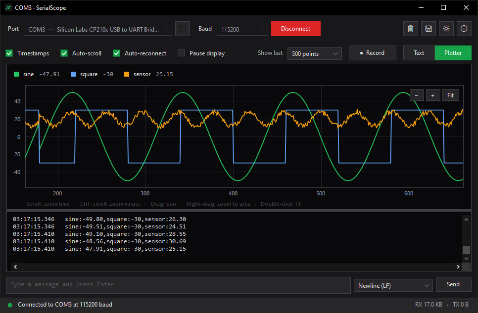
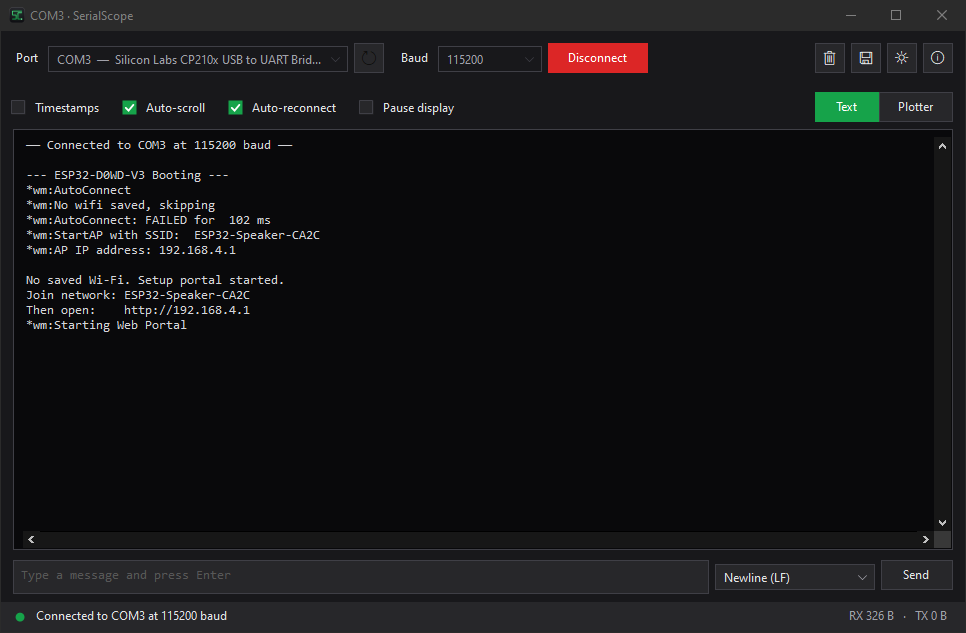
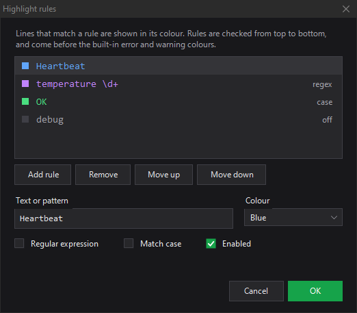
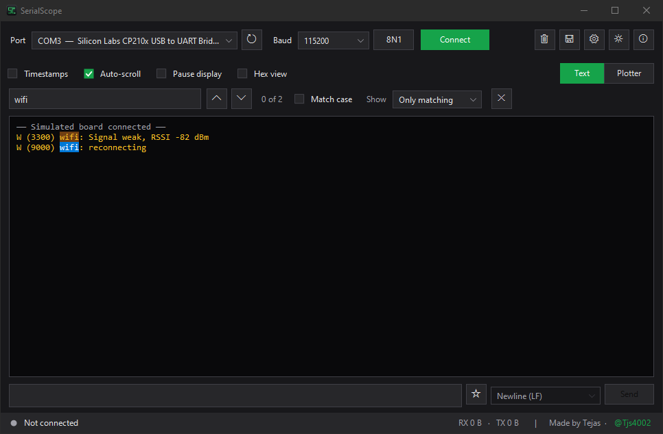

SerialScope is a fast, free serial monitor and live plotter for Windows. Open it, pick your port and see what your ESP32 or Arduino is saying, as colour-coded text or as live graphs.
Built for ESP32 and Arduino work, with full port settings for every other serial device.
Reads the Arduino Serial Plotter format. Zoom, pan, hover values, min/max/average and a clock-time axis.
ESP-IDF and Arduino-ESP32 logs in colour: errors red, warnings amber, debug dimmed. Add your own rules too.
Flash new firmware or unplug the board, and SerialScope picks it back up the moment the port returns.
DTR and RTS stay low by default, so your ESP32 keeps running when you connect instead of rebooting.
Find every match with Ctrl F, or show only (or hide) the lines that mention a word.
Offsets, raw bytes and printable characters for GPS modules, Modbus devices and other binary protocols.
Pick a line ending, recall the last 50 messages with ↑ ↓, and keep favourites one click away.
Save session logs automatically, record plotted readings to CSV, and export graphs as PNG images.
Open a new window per board with Ctrl N, each on its own port, and snap them side by side.
Print one reading per line, the same way you would for the Arduino Serial Plotter. SerialScope draws it live and shows any other text in a panel underneath.
Serial.println(analogRead(A0)); // one line Serial.printf("%d %d %d\n", x, y, z); // three lines Serial.printf("temp:%.1f,hum:%.1f\n", t, h); // named lines

SerialScope recognises ESP-IDF (E (123) wifi:) and Arduino-ESP32 ([E][main.cpp:42]) log levels, plus words like error, panic and timeout, and colours the whole line.



The 8N1 button next to the baud rate opens everything else. Changes apply straight away, even while connected.
| Data bits | 5, 6, 7, 8 |
| Parity | None, odd, even, mark, space |
| Stop bits | 1, 1.5, 2 |
| Flow control | RTS/CTS, XON/XOFF, or both |
| Control lines | DTR and RTS on or off |
Open a port and connect from a shortcut, script or IDE. Portable mode keeps settings and logs next to the .exe, so it runs from a USB stick.
SerialScope.exe --port COM3 --baud 115200 --connect --plot
--plot / --text | Open in plotter or text view |
--hex · --log | Hex view, save a session log |
--theme dark | Choose the theme |
Windows 10 or 11. Windows 7 and 8.1 with .NET Framework 4.5 or later should also work.
Download SerialScope.exe and run it. No installer, no account.
Install and update with the Scoop package manager.
scoop install https://github.com/Tjs4002/SerialScope/releases/latest/download/serialscope.json
No Visual Studio needed: the C# compiler already ships with Windows.
git clone https://github.com/Tjs4002/SerialScope.git cd SerialScope build.bat
SHA256SUMS.txt file so you can check your download.
Serial.begin(...). ESP32 boot messages use 115200. For non-Arduino devices, also check the port settings (for example 7E1 instead of 8N1).23.5, 1 2 3 or temp:23.5,hum:41. Lines with other text are shown in the text panel but not plotted.Free, open source and under 250 KB. If it saves you time, a star on GitHub helps other people find it.